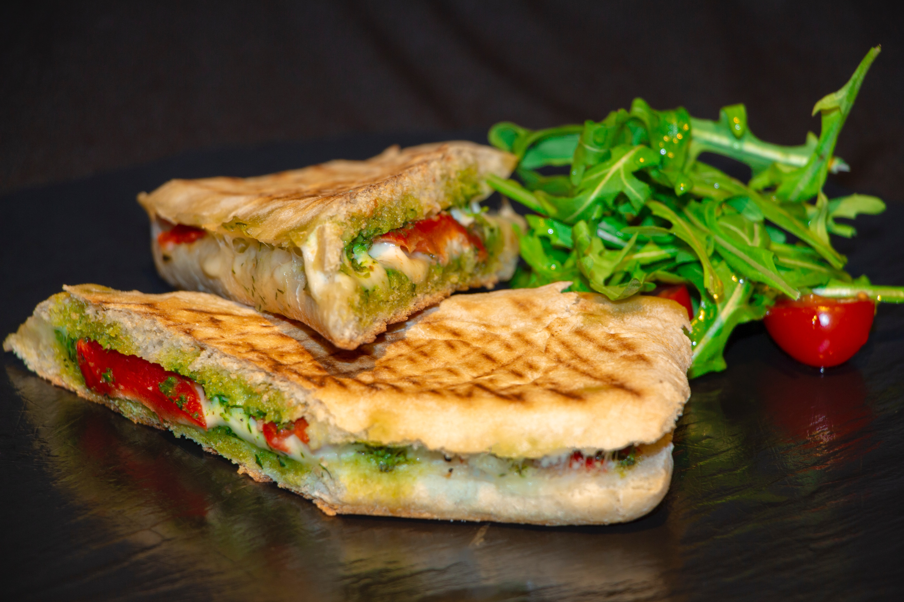

Back
Chicken Pesto Panini
How to make a chicken pesto panini

Ingredients
- □ 1 Baguette
- □ 1 tbsp Basil pesto
- □ 4 Sun-dried tomatoes
- □ 25 g Cheese
- □ 175 g Roast chicken, sliced
- □ 1 Handful baby spinach leaves
- □ Olive oil
- □ Salt and pepper
Recipe:
- Preheat the snackwicher
- Slice the baguette in half and pull out some of the insides from each half
- Brush the outsides of the bread with olive oil
- Spread the pesto on the inside of the baguette
- Top with spinach, sun-dried tomatoes, chicken, and cheese
- Season with salt and pepper
- Press closed and toast